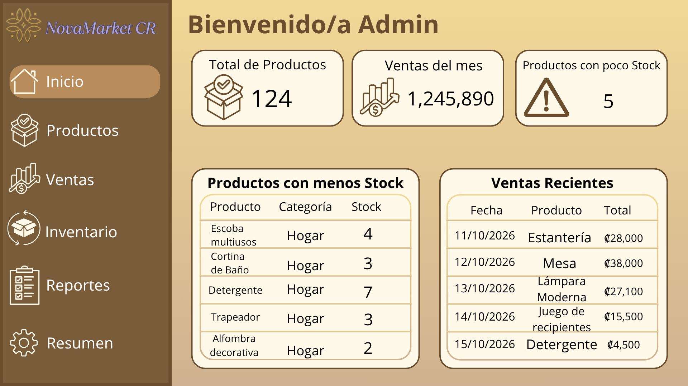
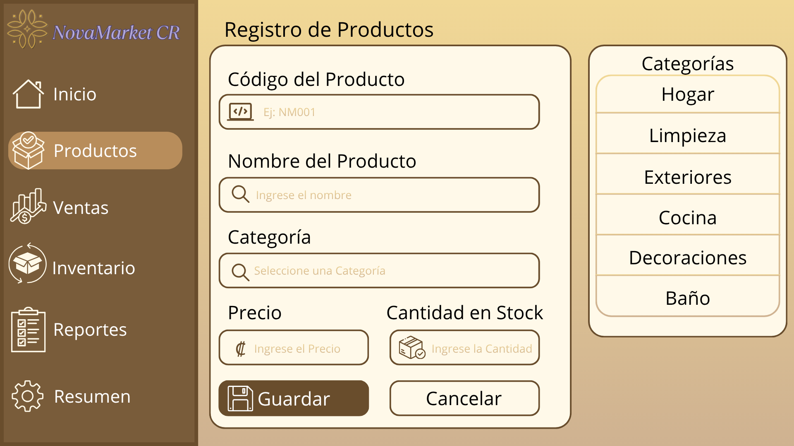
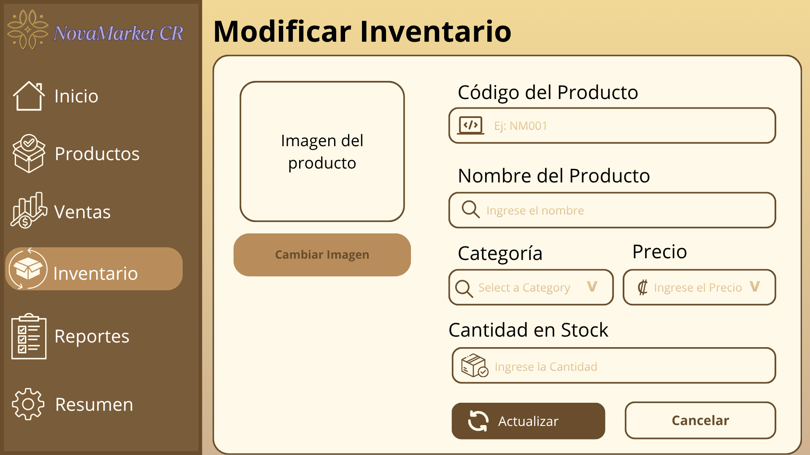

Registrar clientes
Guardar los datos de los clientes de la tienda.
Calidad que transforma tu hogar
Una solución de software diseñada para facilitar la administración de nuestra tienda virtual, organizar los productos y mejorar el servicio a nuestros clientes.
La administración manual de productos, inventarios y ventas puede provocar errores, pérdida de información y retrasos en la atención al cliente. Por eso, NovaMarket CR necesita un sistema que permita organizar mejor estas actividades.
Desarrollar un sistema que permita controlar los productos, registrar clientes y ventas, consultar el inventario y generar reportes para facilitar la administración de NovaMarket CR.
Guardar los datos de los clientes de la tienda.
Agregar productos con su nombre, código y precio.
Consultar las existencias y actualizar las cantidades.
Guardar las ventas realizadas y sus respectivos montos.
Consultar información de ventas e inventario.
Encontrar productos por su nombre o código.
A continuación, se muestran imágenes del prototipo elaborado en el proyecto de Diseño de Software.


